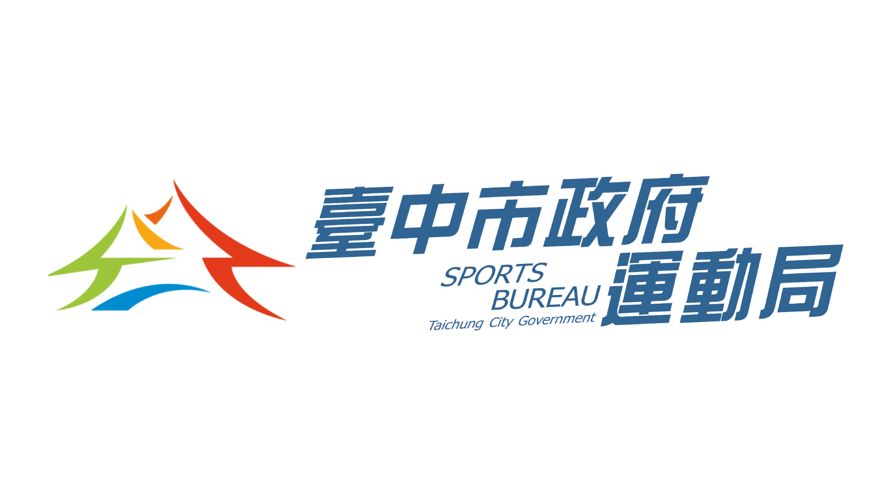
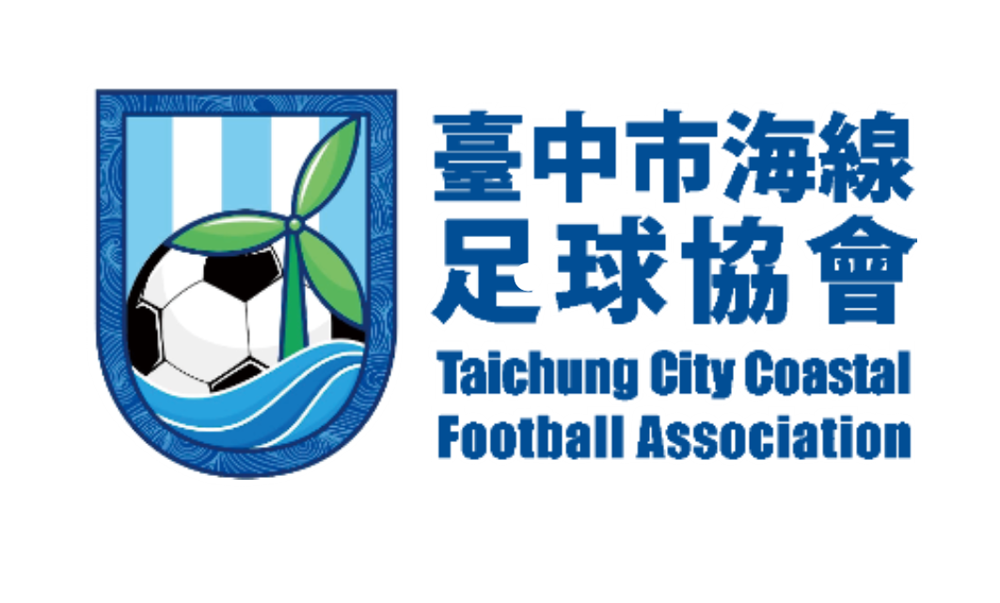

跳至主要內容
臺中分齡足球友誼賽
2026 INTERNATIONAL INVITATIONAL
12.05 — 12.13
首頁
大會公告
賽事資訊
賽程查詢
U6
U8
U10
U12
U15
成人組
競賽章程
活動會場
相關單位
海線足球協會
首頁 /
ORGANIZATIONS
相關單位
共同支持足球，讓每一份熱情在球場相遇。
GUIDANCE
指導單位

臺中市政府運動局
ORGANIZER
主辦單位

臺中市海線足球協會
認識協會 ↗
相關單位依「1105 球隊公告版」競賽章程第 2 頁列示。
目前停用 JavaScript，倒數與篩選無法更新。
賽事資訊
·
賽程
·
競賽章程
·
活動會場
·
相關單位
·
協會介紹